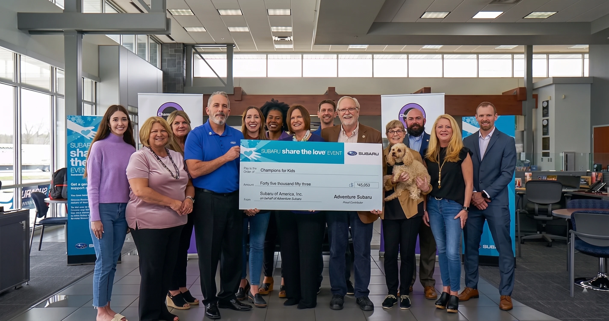
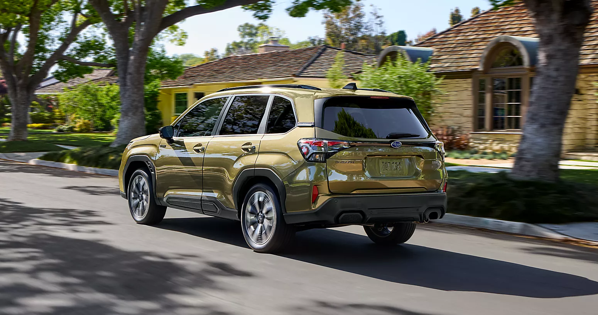
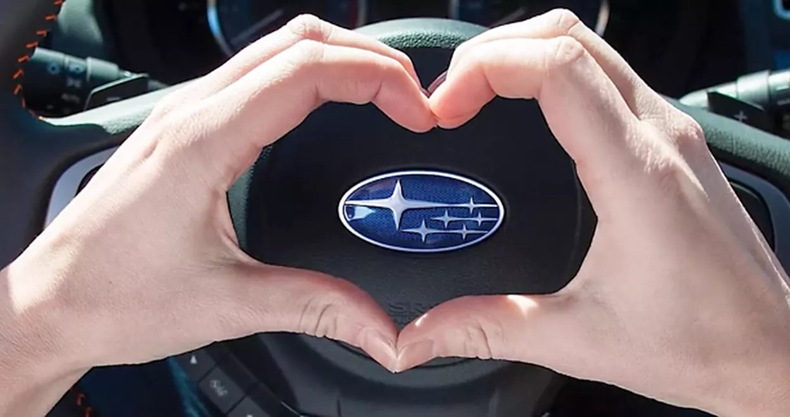
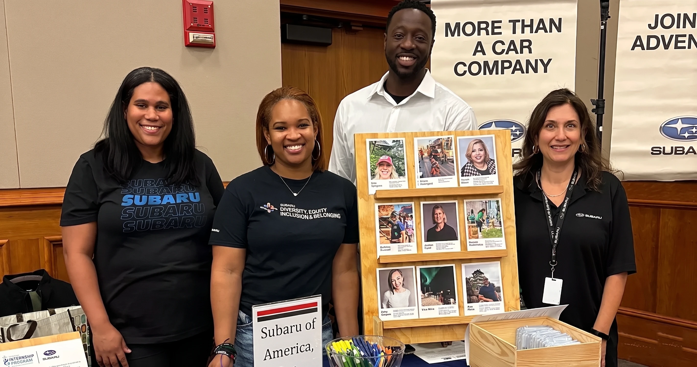

~25" seatEasiest in/out
Forester
Highest seat in the lineup. Upright glass and slim A-pillars give the cleanest forward visibility, useful at intersections and on left turns. EyeSight standard. 2026 IIHS TSP+.
See Forester inventoryA lot of the conversations we have with retired customers go something like this: "I'm looking for something safe, easy to get in and out of, and good on the drive to Phoenix when I have to see the cardiologist." Same answer most of the time. The Outback, the Forester, or the Crosstrek, usually in that order, depending on what your week actually looks like.

FINDLAY SUBARU PRESCOTT · ED. 26All three of our recommended Subarus (Outback, Forester, Crosstrek) come with standard symmetrical all-wheel drive, which earns its keep on a Prescott monsoon afternoon. All three come with EyeSight standard.
The 2026 Forester and 2026 Outback both hold IIHS Top Safety Pick+, the highest award the Insurance Institute hands out, under tougher 2026 testing.
A lot of our regulars fit a pattern: they drive under 12,000 miles a year, they've owned a couple of Subarus already, and they don't rush. The latest Census numbers say roughly a third of Yavapai County is 65 or older. Many of them are on their second, third, or even fourth Subaru with us.
Last reviewed May 2026. Senior-specialist sales advisor designation pending from GM Jason Jenkins (jjenkins@findlayauto.com / (928) 771-6901) before publication.
The 2026 Forester, Outback, and Ascent all earn IIHS Top Safety Pick+, the highest rating the Insurance Institute gives. The 2026 Crosstrek didn't make the 2026 list this year. It earned "Good" in small overlap front, side, headlights, and crash prevention, but came up short on the updated moderate-overlap test.
The plus rating is harder to earn this year. To get it, the vehicle has to score "Good" on a tougher version of the moderate-overlap front crash test that now puts a dummy in the rear seat.
The Forester has been on the IIHS Top Safety list 20 years running.
If safety is your top filter, that matters. The 2026 Crosstrek is still a safe car, it earned "Good" in small overlap front, side, headlights, and crash prevention, but came up short on the updated moderate-overlap test, per IIHS. Worth knowing.
The reason this matters for an older driver isn't theoretical. Reaction time slows a little with every decade. According to IIHS research on automatic emergency braking, the autobrake systems built into EyeSight cut rear-end crashes by roughly half.
EyeSight comes standard on every 2026 Forester, Outback, Ascent, and Crosstrek. Not a $2,000 option you have to remember to ask for.

Reaction time slows a little with every decade. EyeSight's pre-collision braking is the feature that earns its keep on the day you didn't see the brake lights soon enough. It's standard on every 2026 Forester, Outback, Ascent, and Crosstrek.
The Forester sits about 25 inches off the ground at the seat. You don't drop in. You sit and swivel. The Outback is right there with it at 24 to 25 inches. The Crosstrek is a little lower at about 23. All three have door openings wide enough that you're not threading your knees through a small gap.
A low sedan makes you drop down into the cabin and then push back up on your way out. Hard on a sore hip. Hard on a stiff back.
The Forester sits about 25 inches off the ground at the seat. You don't drop in. You sit and swivel.
The Outback is right there with it, around 24 to 25 inches. The Crosstrek is a little lower at about 23. Still well above any sedan.
A few other things that matter more than the spec sheet might suggest.
Sightlines. The Forester's tall, upright glass and slim A-pillars give you one of the cleanest views forward and across. That matters most at intersections and on left turns, which is where the sightline trouble usually shows up. Consumer Reports consistently ranks the Forester near the top of compact SUVs for visibility.
Knobs you can find without looking. Subaru kept real, physical knobs and buttons on the climate controls in the Outback Limited and Forester Limited. Sounds small until you're driving to Phoenix at 70 and need to turn the heat down. Touchscreen-only climate is harder to use without taking your eyes off the road, and a lot harder if your fingers don't move quite the way they used to.
A screen you can actually read. The redesigned 2026 Outback gets a 12.1-inch center screen and a 12.3-inch digital gauge cluster, with adjustable text size and high-contrast modes. Apple CarPlay and Android Auto are standard, so if your kids set up navigation or music for you on their last visit, it just works.
Highest seat in the lineup. Upright glass and slim A-pillars give the cleanest forward visibility, useful at intersections and on left turns. EyeSight standard. 2026 IIHS TSP+.
See Forester inventoryBest long-haul Subaru. 12.1" center screen, 12.3" digital cluster, adjustable text size, physical climate knobs on Limited. 2026 IIHS TSP+. Up to 3,500 lb tow on XT or Wilderness.
See Outback inventorySmaller footprint, parallel-parker friendly. Slips into a tight space at the courthouse square; still tall enough that you're not folding into it. EyeSight standard.
See Crosstrek inventoryPre-collision braking, adaptive cruise with lane centering, lane-departure prevention, reverse automatic braking, rear cross-traffic alert. Standard on every 2026 Subaru.
Read about EyeSightUnder 5 model years and 80,000 miles. 152-point inspection, 7-year/100,000-mile powertrain warranty from original in-service date, CARFAX, 24/7 roadside.
See CPO inventoryThree-generation Subaru families on our books. Many of our retired customers are on their 2nd, 3rd, or even 4th Subaru with us. Ask for John Van Winkle (Love Encore).
Meet the teamEyeSight is Subaru's name for the bundle of cameras and software that watches the road for you. It's standard across the 2026 lineup. Six pieces of it earn their keep for older drivers: pre-collision braking, adaptive cruise with lane centering, lane-departure prevention, reverse automatic braking, rear cross-traffic alert, and DriverFocus drowsiness monitoring.
If a car or pedestrian shows up in your path and you don't react, the car brakes for you. Subaru describes the system in detail here. It works at highway speeds when the system spots the trouble early enough. This is the feature that shows up in the IIHS data with the biggest payoff.
Sets your speed, holds a chosen following distance behind whoever's ahead, and keeps you centered in the lane. On the roughly 100-mile run down I-17 to a Phoenix specialist, this is the feature that turns a tense two hours into a tolerable one.
Adds gentle steering input if you start drifting across the line. Useful on a long, straight stretch where attention naturally wanders.

Reverse automatic braking is the safety net for backing out of a Country Club driveway with a tree behind your right rear bumper. Rear Cross-Traffic Alert beeps when something's coming from either side as you back up. The grocery store parking lot is where that one earns its keep.
On select trims, DriverFocus uses a small infrared camera to read your face for signs of drowsiness or distraction and chimes if you're fading. On a long drive to Phoenix Children's or Mayo Clinic, that's a second set of eyes you can't really do without.
"The EyeSight system on my Forester kept me in my lane on the I-17 drive to Phoenix. My reaction time isn't what it was at 40, and that adaptive cruise on the long straight sections was genuinely relaxing. I don't think I'd take that drive without it now." Paraphrased · recurring theme in Google reviews from active-retiree owners · direct verbatim pending customer permission
The Forester is the easiest daily driver: highest seat, best forward visibility, IIHS Top Safety Pick+. The Outback is the long-haul Subaru: more cargo, the same TSP+, and up to 3,500 lb of towing on the Wilderness or XT. The Crosstrek is the parallel-parker. Numbers are from Subaru of America and IIHS as of May 2026.
| Spec | Forester2026 · Subaru | Outback2026 · Subaru | Crosstrek2026 · Subaru |
|---|---|---|---|
| Seat height (approx.) | ~25 in | ~24 to 25 in | ~23 in |
| Ground clearance | 8.7" (9.3" Wilderness) | 8.7" (9.5" Wilderness) | 8.7" (9.3" Wilderness) |
| EyeSight standard | Yes, all trims | Yes, all trims | Yes, all trims |
| 2026 IIHS rating | Top Safety Pick+ | Top Safety Pick+ | No 2026 award |
| MPG combined | 29 (26 / 33, 2.5L) | 27 (25 / 31, 2.5L) | 29 (26 / 33, gas) |
| Cargo behind 2nd row | 29.6 / 27.5 cu ft | 34.6 cu ft | 20.8 cu ft |
| Towing | 1,500 / 3,500 Wilderness | 2,700 / 3,500 XT or Wilderness | 1,500 / 3,500 Wilderness |
| Symmetrical AWD | Standard | Standard | Standard |
| Pricing | See live → | See live → | See live → |
A note on pricing. We don't list static MSRPs here, because what you actually pay reflects current incentives, our Findlay Family Discount, and what's on the lot today. The links above go straight to live inventory in Prescott, so you'll see real numbers on real cars. None of those prices include destination, tax, title, or fees.
If we had to choose for you, here's how it usually shakes out at our store. The Forester is the easiest daily driver: highest seat, best forward visibility, and the same plus IIHS rating. The Outback is the long-haul Subaru: more cargo room, the same plus rating, and up to 3,500 pounds of towing on the Wilderness or XT. The Crosstrek is the parallel-parker. Small enough to slip into a tight space at the courthouse square. Tall enough that you're not folding into it.
The 2025 Subaru Legacy was the last Legacy, Subaru ended the model after 2025, so it isn't in this comparison. Specs verified May 2026 against Subaru of America and IIHS. Re-verify within 30 days of publication.
A lot of our retired customers don't need a new car. They need a practically new car at a number that doesn't make them flinch. Subaru Certified Pre-Owned is built for that: under 5 model years, fewer than 80,000 miles, 152-point inspection, and a 7-year/100,000-mile powertrain warranty from the original in-service date.
Every CPO Subaru is no more than five model years old, has fewer than 80,000 miles, and has gone through a 152-point inspection covering the engine, transmission, drivetrain, electrical, the EyeSight calibration, and the rest. Anything that doesn't pass gets fixed before the car is certified.
You get a CARFAX history report, a 7-year/100,000-mile powertrain warranty counted from the original in-service date (not your purchase date), and 24/7 roadside assistance.
A new Forester loses 15 to 20 percent of its value in the first year, regardless of how few miles you put on it. A 2-to-3-year-old CPO Forester with 20,000 to 35,000 miles has already absorbed that hit. You still get the same EyeSight, the same AWD, and warranty coverage that, if you only drive 7,000 to 9,000 miles a year, you may never run out of.
If you tow or you want more cargo room, look at a CPO Outback in the XT or Wilderness trim instead. That's the trim that gets you up to 3,500 pounds of towing.
Browse current CPO inventory → or call us at (928) 771-6900 and we'll tell you what's actually on the lot in Prescott this week.
Watson Lake, Lynx Lake, and the Granite Mountain Wilderness are 15 to 20 minutes from anywhere in Prescott. The Forester and Outback both run 8.7 inches of ground clearance, enough for the dirt parking areas at the trailheads. The Outback's combination of EyeSight adaptive cruise, 31 highway MPG, and long-haul seats is what the I-17 drive to a Phoenix specialist was built for.
Trailheads. Watson Lake, Lynx Lake, the Granite Mountain Wilderness, most are 15 to 20 minutes from anywhere in Prescott proper. The Forester and Outback both run 8.7 inches of ground clearance, which is enough to handle the dirt parking areas you find at the trailheads up here without scraping anything important. The Forester's wide rear hatch swallows trekking poles, a daypack, and a cooler without anyone touching the back seat.
Golf. Antelope Hills and StoneRidge are both paved all the way in. Any Subaru handles a bag, but loading and unloading from a Forester or Outback hatch beats wrestling clubs into a sedan trunk every single time.
A word about towing, because the trim you pick really matters. Forester tows 1,500 pounds standard and 3,500 on the Wilderness. Outback tows 2,700 pounds with the standard 2.5L (Premium, Limited, Touring) and 3,500 with the 2.4L turbo (Wilderness, Limited XT, Touring XT). Ascent tows 5,000. So if you're eyeing a 3,000-pound pop-up camper, a base Outback Premium won't cut it, you want the Wilderness or an XT turbo. Run the numbers with us before you buy.
A lot of our customers make that drive, about 100 miles each way down I-17, for cardiology, oncology, an orthopedic surgeon their PCP referred them to. The Outback's combination of EyeSight adaptive cruise, 31 highway MPG on the 2.5L, and seats designed for the long haul is what it was built for.
A quick note on the hospital next door. Yavapai Regional Medical Center, now part of Dignity Health, sits at 1003 Willow Creek Road. Same street as our store at 3230 Willow Creek. Roughly five minutes between the two. If you've got a service appointment and a doctor's appointment the same morning, our service team can sometimes set you up with a loaner. Call (928) 771-6904 to ask.

Two things up front: our sales staff isn't on commission, nobody here gets paid more for putting you in a Touring instead of a Premium, and this is a small enough town that we'll know you by name on your second visit. Three-generation Subaru families on our books.
Full team at /staff; local Love Promise commitments at /subaru-love-promise.
The 2026 Forester for the easiest in/out and best forward sightlines. The 2026 Outback for long-haul comfort and up to 3,500 lb of towing on the Wilderness or XT. The 2026 Crosstrek for parallel parking on Gurley Street. EyeSight is standard on every trim. Forester and Outback hold IIHS Top Safety Pick+ for 2026.
Non-commissioned sales team. Whoever's helping you is paid the same regardless of which Subaru you buy or whether you buy one at all. After a lifetime of car-buying, most of our retired customers say that single fact is what they noticed first and remembered longest.
3230 Willow Creek Road, five minutes from Yavapai Regional Medical Center. Browse new inventory or CPO inventory any time.
Sales: (928) 771-6900.
Service: (928) 771-6904.
Parts: (928) 771-6950.
The Forester. Its seat sits about 25 inches off the ground, which is about as high as you can get in a compact SUV, so you sit and swivel rather than drop. The Outback is a close second at 24 to 25 inches. The Crosstrek at around 23 inches is still much higher than any sedan. All three have wide door openings, which makes more of a difference than people expect once a hip starts to complain.
For 2026, the Forester and the Outback both hold IIHS Top Safety Pick+. That's the highest rating IIHS gives, and they earned it under tougher 2026 testing rules. The Ascent is also Top Safety Pick+. EyeSight is standard on every 2026 trim, so you're getting pre-collision braking, adaptive cruise with lane centering, lane-departure prevention, and rear automatic braking on a Base model, not just on the top trim.
IIHS research on real-world crash data shows automatic emergency braking cuts rear-end collisions by about half.
Depends on the trip. For most Prescott retirees driving in town, the Forester is the easier daily car: slightly higher seat, better forward visibility, and the same Top Safety Pick+ rating. The Outback wins when the trip gets longer or heavier, more cargo room (34.6 cubic feet behind the back seats versus 27.5 to 29.6 in the Forester), better long-haul comfort, and up to 3,500 pounds of towing if you go with the Wilderness or an XT turbo. If you make the Phoenix specialist drive often, get the Outback.
Yes, and the IIHS data backs it up. EyeSight bundles the six features that matter most: Pre-Collision Braking, Adaptive Cruise with Lane Centering, Lane Departure Prevention, Reverse Automatic Braking, Rear Cross-Traffic Alert, and DriverFocus drowsiness monitoring on select trims. Per IIHS research, automatic emergency braking on its own reduces rear-end crashes by roughly 50 percent. EyeSight is standard on every 2026 Forester, Outback, Ascent, and Crosstrek.
A 2023 or 2024 Forester with 20,000 to 35,000 miles is usually the best value if you drive less than 10,000 miles a year. You get the 152-point inspection, a 7-year/100,000-mile powertrain warranty counted from the original in-service date, a CARFAX report, and 24/7 roadside assistance.
If you tow or you need more cargo room, look at a CPO Outback in an XT or Wilderness trim instead. See current CPO inventory →.
Depends on the model and the trim. Forester tows 1,500 pounds in standard trims and 3,500 in the Wilderness. Outback tows 2,700 pounds with the standard 2.5L and 3,500 with the 2.4L turbo (Wilderness, Limited XT, Touring XT). Ascent tows 5,000.
A 2,000-to-2,500-pound pop-up camper sits comfortably inside the Outback Wilderness or XT rating, but exceeds a base 2.5L Outback's 2,700-pound limit. Match the trim to the trailer before you sign anything. Subaru recommends a Class 3 hitch at full rated capacity. Call us at (928) 771-6900, we'd rather work the math out together than have you find out at the trailhead.
Our sales team is non-commissioned. Nobody here gets paid more for putting you in a Touring instead of a Premium, or for adding a service plan you don't need. After a lifetime of car-buying, most of our retired customers say that single fact is what they noticed first and remembered longest.
This is a small enough town that we'll know you by name on your second visit. We have three-generation Subaru families on our books. Yavapai Regional Medical Center is five minutes from our store on the same Willow Creek Road, so service appointments and doctor's appointments often fit the same morning. Call (928) 771-6900 or come by 3230 Willow Creek Road.
By the Findlay Subaru Prescott editorial team, with review by General Manager Jason Jenkins · drafted May 5, 2026 · target publish May 25, 2026. Senior-specialist sales advisor designation pending from GM before publication.
Researched and drafted with AI assistance. Fact-checked against primary sources: Subaru of America, IIHS, Consumer Reports, AARP, the U.S. Census Bureau, and the Subaru Certified Pre-Owned program. Specs verified at manufacturer sources; re-verify within 30 days of publication. Customer quote in §04 paraphrased from a recurring theme in active-retiree Google reviews; direct verbatim pending customer permission.
All 2026 model specs reflect manufacturer-published values as of May 2026. Local observations reflect Findlay Subaru Prescott showroom and service department experience in the Yavapai region.
Non-commissioned sales team. Five minutes from Yavapai Regional Medical Center. Three-generation Subaru families on our books.